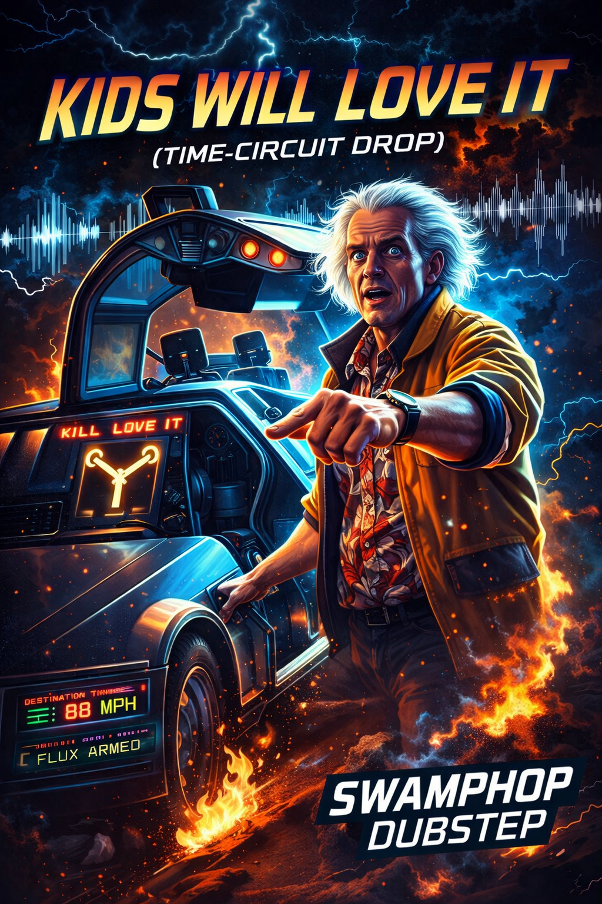

AeroVista | EchoVerse Audio Presents:
EIGHTY-EIGHT REBEL
The first numbered Time Circuit transmission: 88 BPM with one foot in 1985 and the other somewhere past 3026.
88 BPM • TC-01
Time-circuit themed visualizer
Playlist-ready player
Cover-art driven signal
Auto-next on track end
Sample line:
“Guess you're not ready for that yet. But your kids will love it.”

VISUALIZER
TIME CIRCUITS
DEST: 88 MPH
FLUX: ARMED
DEST: 88 MPH
FLUX: ARMED
PLAYER
0:000:00
Vol
NUMBERED CIRCUIT
Now playing: TC-011 / 4
All four Future's Past numbered masters are loaded at 88 BPM. Archive cuts remain separate from the numbered circuit.
RECOVERED SIGNAL / WRONG CENTURY
Archive Cuts.
Older Time Circuit experiments, source renders, and side-channel transmissions remain separate from the numbered Future's Past sequence.
THE TIME CIRCUIT / FUTURE'S PAST
Wear the timeline.
Six approved Future's Past designs. Time Circuit accepts only canonical hoodie records assigned to this destination; no generic Apparel fallback and no provider IDs in the browser.
FUTURE'S PAST HOODIES
Choose your timeline.
Northline's store layout pattern, applied only here: large product art, direct variant selection, Add to Bag, and a slide-over cart.
Catalog-safe by design. Preview cards remain visible until matching Future's Past hoodie records arrive from Catalog Control. Canonical
avp_* and avv_* identity may enter the browser; Square/provider identity may not. Bagging can happen locally, but checkout stays gated until the NXCore Commerce handoff is deployed and verified.